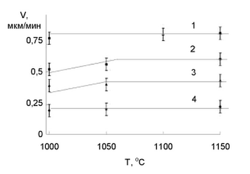
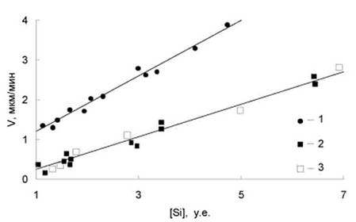
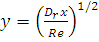
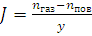

электронный
ресурс по учебной дисциплине 1-58 01 01 - "ИНЖЕНЕРНО-ПСИХОЛОГИЧЕСКОЕ ОБЕСПЕЧЕНИЕ ИНФОРМАЦИОННЫХ ТЕХНОЛОГИЙ"
|
||
| Оглавление | Программа | Теория | Практика | Контроль знаний | Об авторах | ||
|
Практика
ЛАБОРАТОРНАЯ РАБОТА №4 Исследование процессов осаждения диэлектрических плёнок Цель работы: Изучить процесс осаждения диэлектрических пленок. Определить процентное содержание примесей в пленке SiO2. Написать программу и построить зависимости выходных параметров от входных. Теоретические сведения Осаждение пленок и покрытий на подложку — способ получения непрерывных слоев материала в виде пленок или покрытий на холодной или подогретой поверхности подложки путем их осаждения из паров (газовой фазы), плазмы или коллоидного раствора. Химическое осаждение (CVD) пленок из газовой фазы связано с высокотемпературными газовыми реакциями хлоридов металлов в атмосфере водорода и азота или водорода и углеводородов. Температурный интервал осаждения CVD-пленок 1200—1400 K. Методы газофазной эпитаксии (ГФЭ) основаны на осаждении из газовой фазы вещества, полученного в результате химических реакций, например, восстановления хлоридов кремния или германия водородом (SiCl4 + 2H2 = Si + 4HCl), или пиролитического разложения моносилана (SiH4 = Si + 2H2) и др. Процессы осуществляются в реакторах горизонтального или вертикального типов. Газовая система обеспечивает подачу в реакторную камеру газовой смеси требуемого состава. Добавляя к газовой сверхвысоком вакууме до требуемой температуры и испаряется. При этом его атомы и молекулы попадают на подложку, где происходит их конденсация. Физическое осаждение (PVD) пленок из газовой фазы реализуется в вакуумных камерах при давлении 10–2—10–3 Па путем конденсации на подложке паров материала, полученных нагревом, испарением или распылением мишени. Давление паров испаряемого материала составляет около 1 Па. В зависимости от способа воздействия на мишень различают катодное и магнетронное распыление, индукционное, лазерное и электронно-лучевое испарение. Основные параметры физического осаждения — температура подложки (температура конденсации), скорость конденсации, степень разрежения и способ испарения (распыления). При осаждении из плазмы с использованием металлических катодов для поддержания дугового электрического разряда используются реактивные рабочие среды (смеси аргона с азотом или углеводородами при давлении ~0.1 Па); осаждение ведется на подложку, нагретую до 500—800 K; непрерывность и толщина пленки, размеры кристаллитов в ней регулируются изменением давления газа и параметров электродугового разряда. Осаждение на подложку пленок из коллоидных растворов включает в себя подготовку раствора, осаждение, сушку и отжиг. Методом осаждения наночастиц оксидов и халькогенидов получают полупроводниковые пленки ZnO, SnO2, TiO2, CdS, PbS. Наноструктурированные пленки, содержащие наночастицы разных полупроводниковых веществ, получают методом соосаждения. Для выращивания эпитаксиального кремния используется один из четырех кремнесодержащих реагентов (тетрахлорид кремния – SiCl4, трихлорсилан – SiHCl3, дихлорсилан – SiH2Cl2 и силан – SiH4) и водород. При таких условиях возможно протекание химических реакций типа SiCl4 + H2 = SiHCl + HCl SiHCl3 + H2 = SiH2Cl2 + HCl SiHCl3 = SiCl2 + HCl SiCl2 + H2 = Si + 2HCl Скорость роста эпитаксиального слоя определяется главным образом температурой процесса, концентрацией кремнийсодержащего вещества и скоростью газового потока Зависимость скорости роста от скорости газового потока является в широком диапазоне линейной однако регулировать условия осаждения изменением скорости потока можно лишь в ограниченном интервале в связи с необходимостью обеспечения высокой однородности толщины растущего слоя и малого разброса ее значений между различными структурами, получаемыми в едином технологическом процессе Вместе с тем, зависимость скорости роста от скорости газового потока оказывается полезной, позволяя при оптимальном выборе угла наклона боковой грани подложкодержатсля к его основанию скомпенсировать изменение скорости роста, связанное с уменьшением концентрации источника кремния в тазовом потоке при ее движении вдоль подложкодержатсля. Оптимальные температура и концентрация выбираются с учетом необходимости обеспечения требуемого уровня структурного совершенства слоя и максимальной производительности процесса. Максимальная скорость роста эпитаксиального слоя кремния зависит от ориентации подложки, а ее соотношение для различных поверхностей составляет: v(111) : v(100) : v(110) = 1 : 1,7 : 2,0. Максимальная скорость роста зависит также от разориентации поверхности. Например, для идеально ориентированной плоскости (III) при хлоридном процессе она составляет 1,0 мкм/мин; при разориентировке 0,5 град – 1,5 мкм/мин, а при отклонении ка 2 град. • 3,5 мкм/мин. Такие зависимости получены для больших содержаний SiСl4 в парогазовой смеси, при которых рост переходит в область кинетического контроля, и обусловлены изменением условий протекания поверхностных процессов. Понижение температуры процесса в этом случае должно было бы приводить к снижению максимальной скорости роста. Существенно иной характер температурной зависимости скорости роста наблюдается при проведении процесса в области диффузионного контроля. По данным (табл. 1) оптимальная температура роста эпитаксиального слоя при использовании различных источников кремния снижается в ряду тетрахлорид кремния•трихлорсилан•дихлорсилан. При этом максимальная скорость роста эпитаксиального слоя повышается при переходе от терахлорида кремния к трихлорсилану и от трихлорсилана к дихлорсилану. Таблица 1 – Оптимальные условия эпитаксиального осаждения кремния
На рис. 1 показана зависимость скорости роста эпитаксиального слоя от температуры осаждения и концентрации дихлорсилана в газовой фазе. Скорость роста определяли, как отношение толщины эпитаксиального слоя к продолжительности осаждения. Толщину слоя определяли методом интерференции инфракрасного отражения. Vроста = X/tосажд где Х – толщина эпитаксиального слоя; tосажд – продолжительность процесса осаждения. Продолжительность процесса составляла 10-30 мин. Видно, что для выбранных условий скорость роста практически не зависит от температуры. Это свидетельствует о том, что процесс идет в области диффузионного контроля и наиболее медленной стадией является подвод молекул дихлорсилана к поверхности подложки.
 Рисунок 1 – Зависимость скорости роста эпитаксиального слоя для дихлорсиланового процесса. Концентрация дихлорсилана: 1 – 0,4 мол.%, 2 – 0,25 мол.%, 3 – 0,15 мол.%, 4 – 0,1 мол.% При осаждении слаболегированных эпитаксиальных слоев кремния водородным восстановлением трихлорсилана при температурах 1393 – 1453 К и дихлорсилана при температурах 1293 – 1373 К скорость роста линейно зависит от концентрации кремнийсодержащего компонента в парогазовой фазе (рис. 2). Кроме того, в интервале от 0,3 до 1 атм скорость роста эпитаксиального слоя для дихлорсиланового метола не зависит от давления в реакторе. Эти результаты находятся в соответствии с известными данными и свидетельствуют о том, что процесс роста эпитаксиального слоя при выбранных условиях осаждения контролируется подводом крсмиийсодсржащего компонента к фронту кристаллизации. Вместе с тем, известно, что при высоком содержании крсмиийсодержащего вещества в парогазовой фазе зависимость скорости роста от его концентрации становится немонотонной. В частности, для тетрахлорида кремния при концентрациях более 4-5 мол. % скорость роста эпитаксиального слоя начинает уменьшаться, а при более высоких концентрациях рост слоя сменяется его травлением.
 Рисунок 2 – Зависимость скорости роста эпитаксиального слоя от концентрации кремнийсодержащего вещества (1 – SiHCl3; 2, 3 – SiH2Cl2) в газовой фазе при давлении в реакторе 1 атм (1, 2) и 0,3 (3) При условиях, соответствующих данным таблицы 1, скорость роста эпитаксиального слоя, согласно полученным нами данным, не зависит от ориентации подложки (исследовали процессы роста эпитаксиальных слоев на подложках с ориентациями поверхности (100), (110) и (111), а также от температуры процесса в интервалах 1390 – 1450 К для трихлорсиланового и 1290 – 1370 К для дихлорсиланового методов осаждения, что подтверждает вывод о протекании процесса в области диффузионного контроля. Выполненные нами исследования процессов роста эпитаксиальных слоев кремния показали также, что улучшение качества обработки рабочей и боковой поверхностей подложки сдвигает точку перехода процесса роста в область диффузионного контроля и позволяет дополнительно уменьшить температуру осаждения эпитаксиального слоя в трихлорсилановом и дихлорсилановом процессах на 50 – 100 К при одновременном снижении плотности дислокаций и дефектов упаковки в слое. Для обсуждения механизма течения газа рассмотрим число Рейнольдса Rе — безразмерный параметр, характеризующий режим течения газа в реакторе, где Dr — диаметр реакторной трубы, v —скорость течения газа, m —вязкость и р —плотность газа. Для промышленных установок величина Dr составляет несколько сантиметров, v — несколько десятков сантиметров в секунду. Такие значения параметров свидетельствуют о ламинарном течении газа в реакторе, т. е. Rе<2000. Таким образом, около пьедестала и стенок реактора будет формироваться пограничный (стационарный) слой с уменьшенной скоростью течение газа. Толщина этого слоя y определяется как  (2) где х – расстояние вдоль оси реактора. Газ-носитель, обычно используемый при эпитаксии, - водород. При подстановке значений p и m для водорода в соотношение (1) получим Rе=100. Потоки реагентов направленные к поверхности подложки и от нее, являются сложной функцией нескольких переменных, таких, как температура давление в системе, концентрация реагентов и толщина пограничного слоя. Допустим поток определяется как: (3) или приблизительно  (4) где
– концентрация реагентов в газовом потоке и вблизи поверхности соответственно; D – коэффициент диффузии реагента в газовой фазе, являющейся функцией давления и температуры; у – толщина пограничного слоя; J – поток реагентов, характеризующих количество молекул, проходящее через единицу площади за единицу времени. Задание для выполнения лабораторной работы Определите процентное содержание Cl (ат.%) в плёнке SiO2, если средняя концентрация хлора в начальных слоях осаждённой плёнки толщиной X нм составляет С см-3. Варианты заданий:
Порядок выполнения работы 1. Напишите программу, обеспечивающую решение задачи. 2. Постройте зависимости выходных параметров от входных. 3. Оформите отчет и защитите лабораторную работу. Содержание отчета 1. Цель работы. 2. Краткие теоретические сведения. 3. Решение задачи. 4. Код программы и скриншоты рабочих окон. 5. Зависимости выходных параметров от выходных. 6. Выводы по работе. Контрольные вопросы 1. Что такое осаждение пленок и покрытий на подложку? 2. Что такое химическое осаждение? 3. Что такое Физическое осаждение? 4. Опишите процесс осаждения из плазмы с использованием металлических катодов. 5. Опишите процесс осаждения на подложку пленок из коллоидных растворов. 6. Какими параметрами определяется скорость роста эпитаксиального слоя? Практика
|
| (С) БГУИР |